Программист, отвечающий за разработку внешней, клиентской части сайта или приложения, которая отражается в любом браузере. Он также отвечает за вёрстку сайта, его интерфейс, включая фильтры, кнопки, анимации, формы, рекламные блоки и т.п. Всё, с чем работает этот специалист, видят пользователи.
